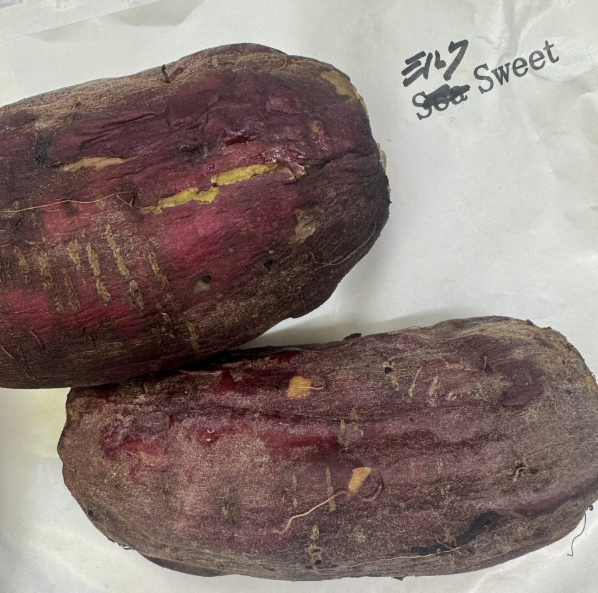
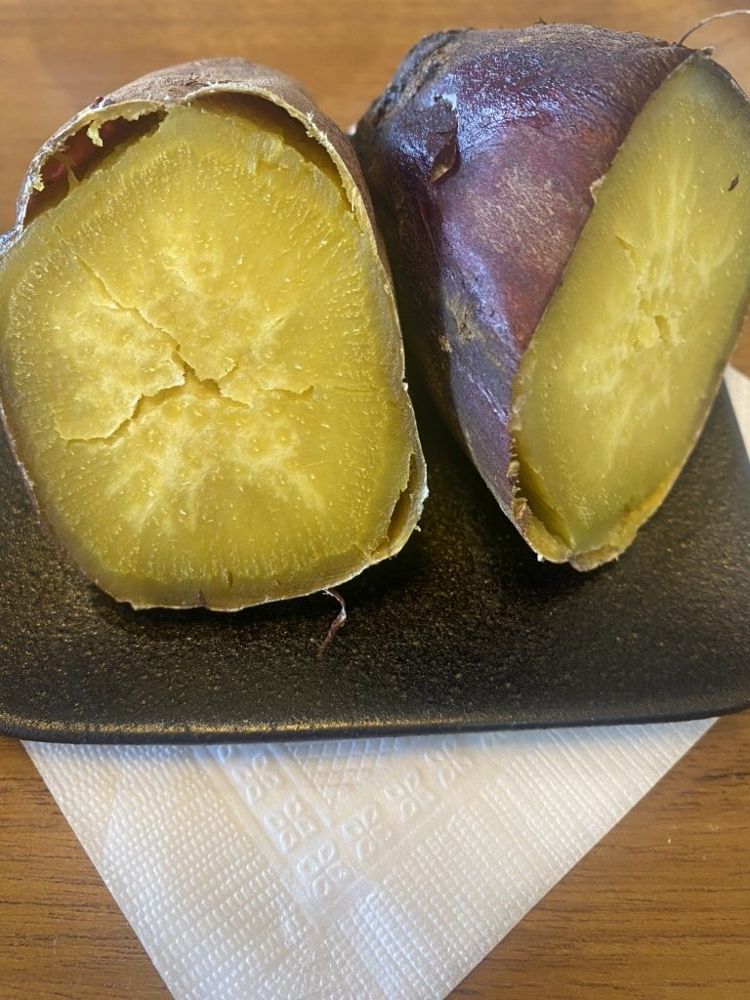
ABOUT
当店は焼き芋の専門店でございます。じっくりと焼いたさつまいもを、品種ごとにお出ししております。
同じ日に、紅はるかのねっとりとしたものと、すずほっくりのほろりとしたものが並びます。どちらをお持ちするかは、その日のお気分でお選びください。
コーヒーは、世界に流通するうちのおよそ5パーセントにあたるスペシャルティコーヒーだけを仕入れております。ブレンドとシングルを合わせて常時5、6種類。バリスタが召し上がる方のお好みをうかがって、ご一緒に一杯をお選びいたします。
ご注文をいただいてから、サイフォンで一杯ずつ淹れてお出ししております。
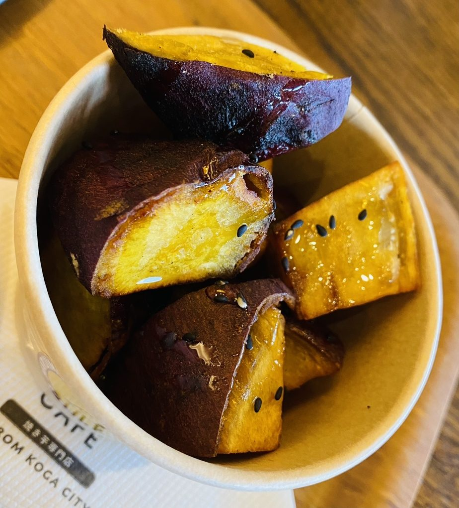
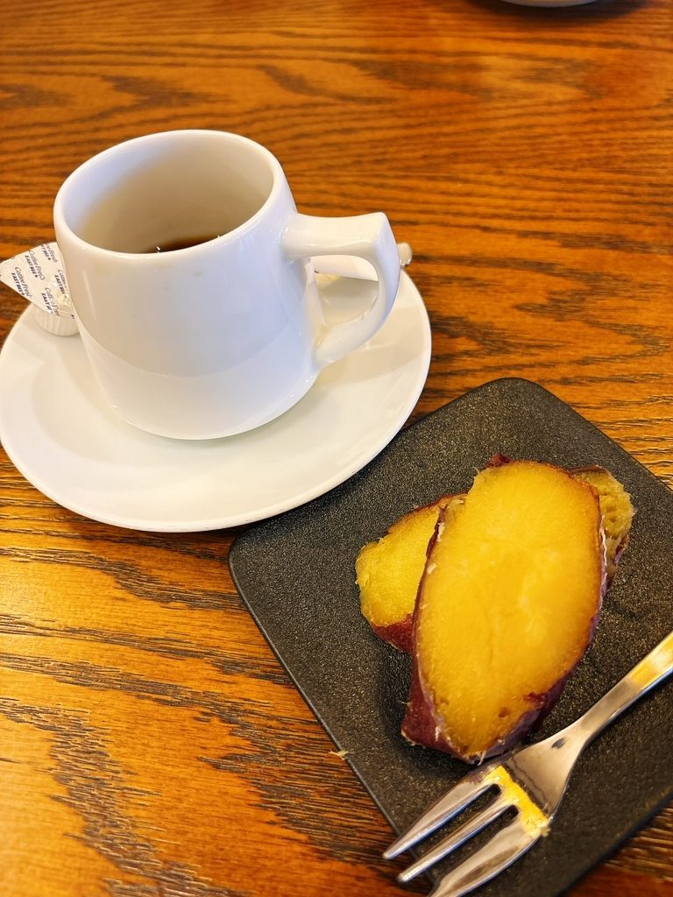
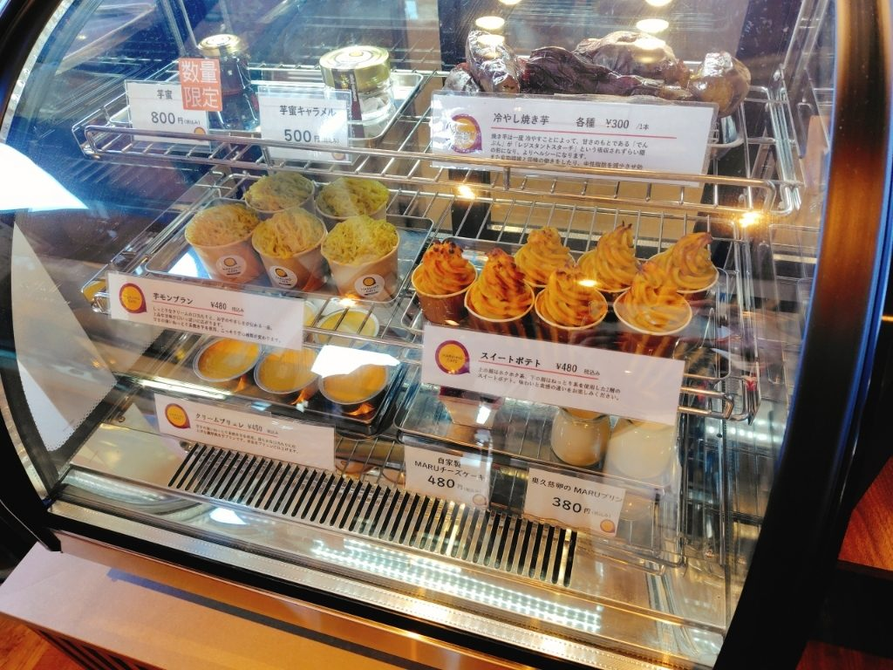
VARIETY
さつまいもは、品種によって甘さも舌ざわりも変わります。当店では年間を通して四種類以上をご用意し、その日にお出しできるものを店内の札でご案内しております。
焼き上がりは11時ごろでございます。数に限りがございますので、売り切れの節はご容赦ください。
ねっとりとして、蜜のような甘さ
干し芋にも仕立てる、濃い甘さ
割ると濃い黄色。ねっとりと甘い
ほろりとほどけて、後を引かない
シルクスイート、Sea Sweet もご用意する日がございます。
COFFEE
生豆は、バリスタが実際に淹れて味をみたうえで仕入れております。豆はブレンドとシングルを合わせて常時5、6種類ご用意しております。
どれになさるか迷われましたら、お好みをうかがってご一緒にお選びいたします。お淹れするところは、カウンター越しにご覧いただけます。
ご自宅用の豆とドリップバッグ、リキッドアイスコーヒーは、店頭とオンラインストアでお求めいただけます。
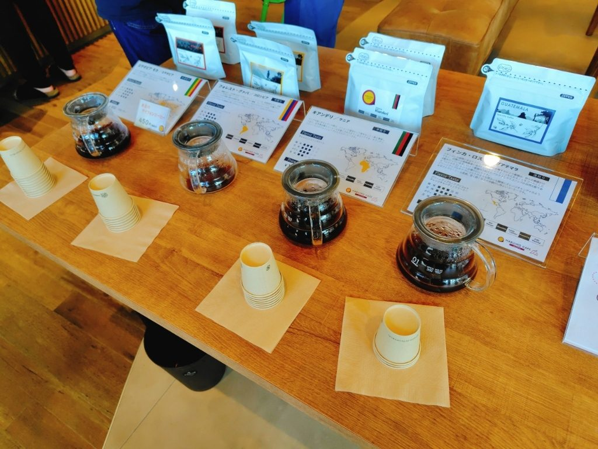
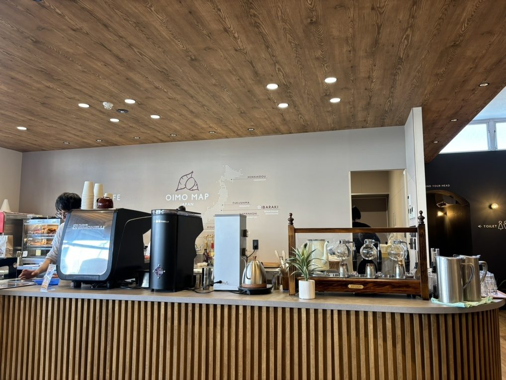
INTERIOR
ソファのお席とテーブルのお席をご用意しております。全席禁煙で、お子様連れでもお気兼ねなくお過ごしいただけます。
ご注文とお会計はレジで先に承っております。お済みになりましたら、どうぞお好きなお席へお進みください。
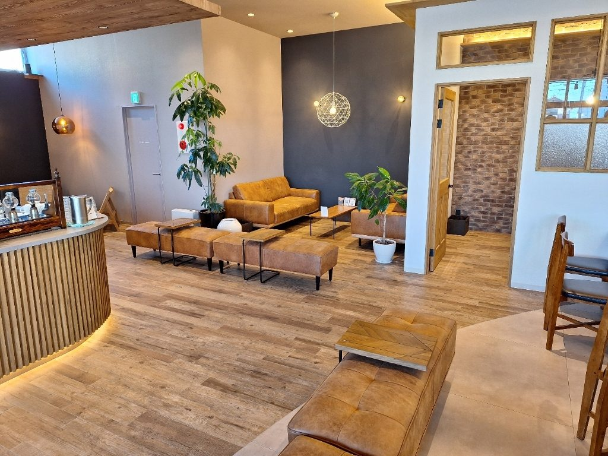
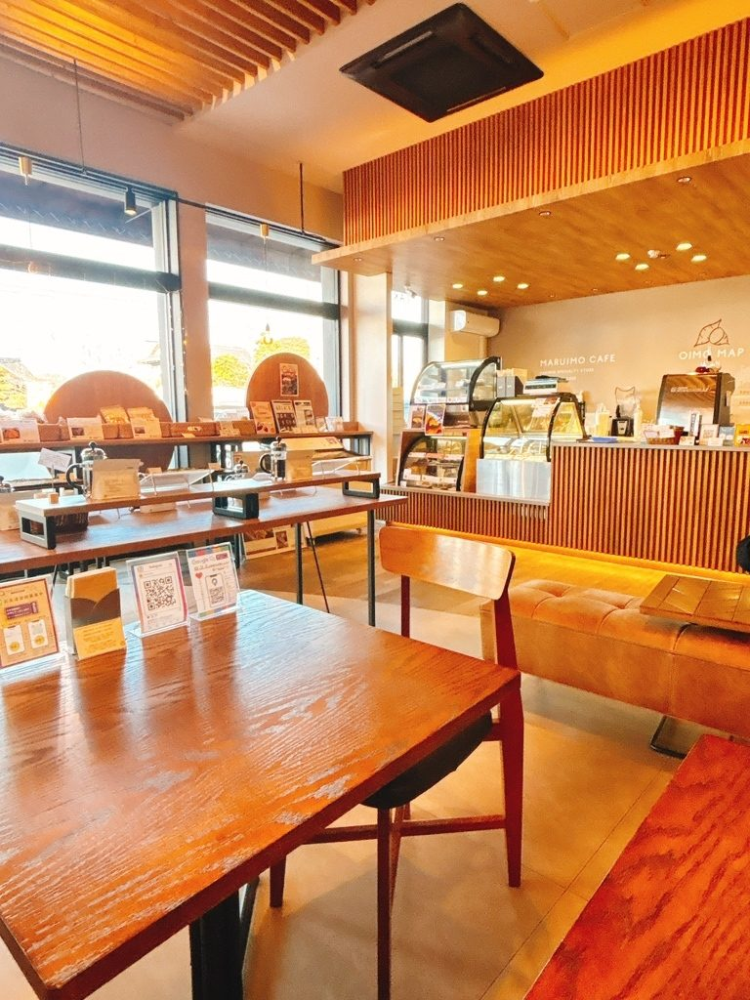
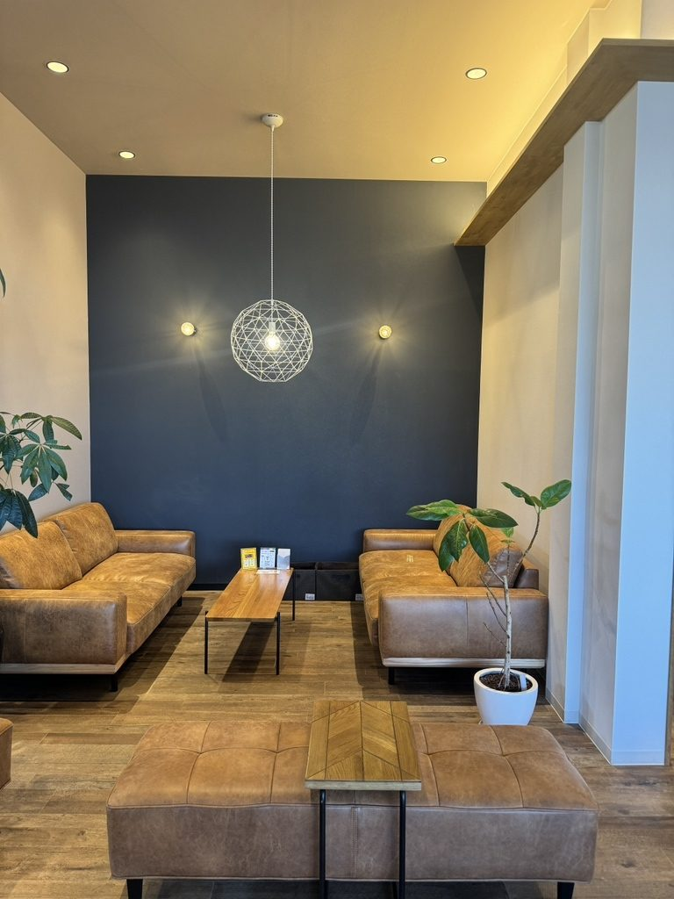
VOICE
「コーヒーはサイフォンで一杯ずつ丁寧に淹れてくれる本格的なスタイルです。目の前で抽出される様子を見ることができるのも楽しみの一つで、香りが店内に広がる時間も贅沢に感じられます。」
お客様の声より
「天ノはるかの甘さにびっくり！ お芋自体もトロトロ、これはリピート必至の美味しさ。」
お客様の声より
「色んな焼き芋を試しましたが、やっぱりねっとり系が好きなのが分かりました。ほっくりやらしっとりやらねっとりやら全部有るって改めてすごいと思いました。」
お客様の声より
ACCESS
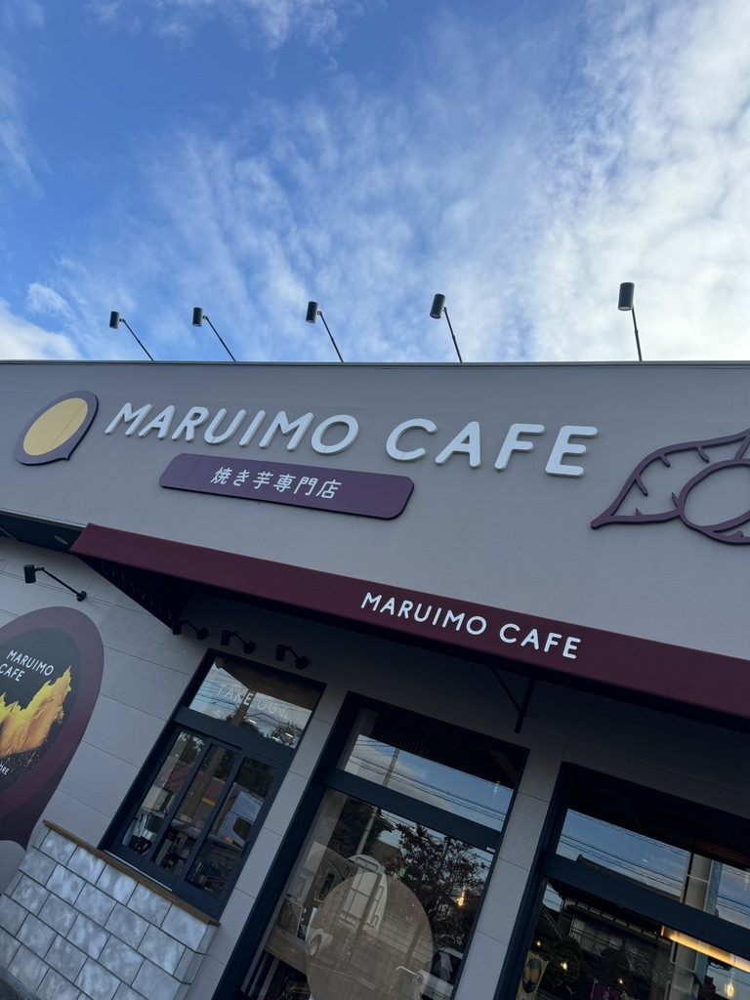
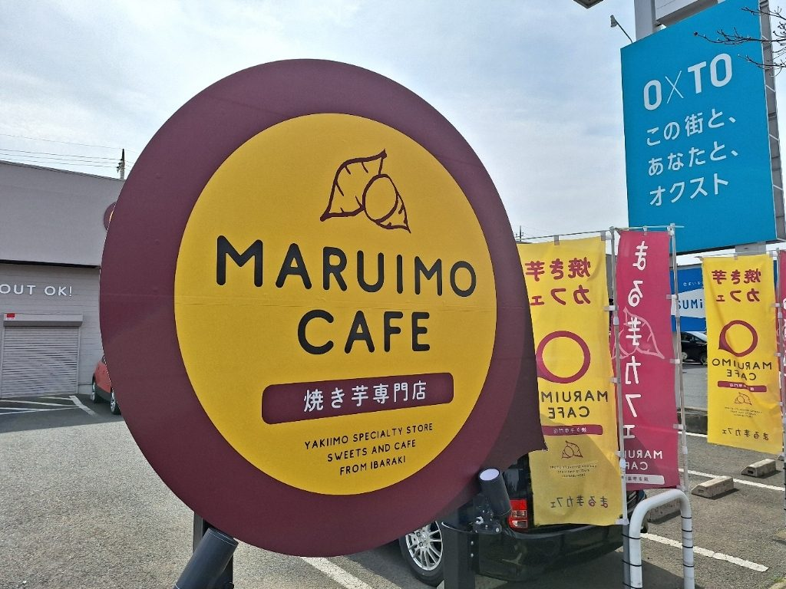
| 住所 | 〒306-0235 茨城県古河市下辺見2704 |
|---|---|
| 電話 | 0280-28-0032 |
| 営業時間 | 10:00〜18:00（イートイン限定商品のラストオーダー 17:30） |
| お食事 | 10:00〜15:00 |
| 焼き上がり | 11時ごろ |
| 定休日 | 水曜日 |
| お支払い | クレジットカード・電子マネー・QRコード決済をご利用いただけます |
| 駐車場 | ございます |
| お席 | ソファ席とテーブル席（全席禁煙） |